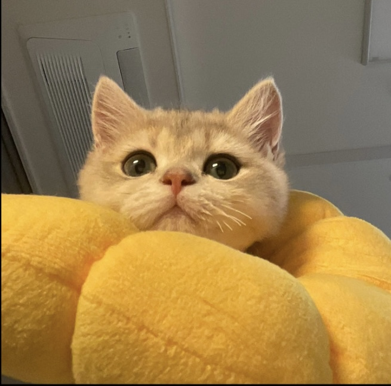

고양이를 찾아라!
~집사의 레벨업을 위하여~

좁고 막힌 곳에 들어가고 싶어하는 건 고양이의 본능이다. 나는 지금 두마리의 고양이를 키우고 있는 데 이 고양이들은 아주 호기심 강한 못말리는 냥이들로 좁고 막힌 곳에 들어가 잠들어버려 못 찾는 경우가 많다. 이렇게 숨은 고양이들을 내가 어떻게 놀아주고 찾는 지 난이도 별로 알려주겠다.
좁고 막힌 곳에 들어가고 싶어하는 건 고양이의 본능이다. 나는 지금 두마리의 고양이를 키우고 있는 데 이 고양이들은 아주 호기심 강한 못말리는 냥이들로 좁고 막힌 곳에 들어가 잠들어버려 못 찾는 경우가 많다. 이렇게 숨은 고양이들을 내가 어떻게 놀아주고 찾는 지 난이도 별로 알려주겠다.

먼저 고양이 소개를 시작하겠다. 난 두마리의 고양이를 키운다. 둘다 이제 곧 7개월이 되어가는 성장기의 냥이들로 한참 세상이 궁금하고 뭐든지 먹어치우는 나이이다. 먼저 품종이 랙돌인 고양이의 이름은 시루인데 시크하지만 귀여운 외모를 가지고 있다. 하지만 뚱냥이로 덩치가 벌써부터 어마어마하다. 두번째 고양이의 이름은 유부이다. 이 냥이는 브리티쉬 숏헤어로 시루보다 2일 늦게 태어났다. 아주 동글동글한 외모를 가지고 있으며 식탐이 아주 많다. 근데 왜인지 덩치는 아주 조그맣다. 두 냥이 모두 아주 순하고 귀엽지만 고양이를 처음 길러보는 나는 잘 숨고 사라지는 고양이 스킬에 당황할 때가 많았다.

이정도 레벨은 고양이들이 어디있는 지 금방 찾을 수 있다. 소리로도 부스럭 거리고 고양이들이 많이 숨는 곳에 숨기 때문이다. 그 곳은 바로 종이봉투 안이나 쇼파 밑이다. 고양이들이 이곳에 숨었을 땐 귀엽다, 고양이답다하며 피식 웃고 넘어갔다.
내가 찾는 데 좀 시간이 걸렸던 장소는 바로 매트리스 커버 안에 숨었을 때다. 내 침대는 매트리스 위에 천이 여러 겹 올라가 있다. 시루와 유부는 그 여러 겹의 천들을 뚫고 그 안에 들어가 휴식을 취하고 있었다. 문제는 이 두마리의 냥이들이 아기시절이였어서 안에 숨어들어가도 겉으로 잘 티가 안 났었던 점이다. 그래서 냥이들의 존재를 오랫동안 못 찾았었구 결국 포기하고 침대에 누웠을 때 뭔가 물컹한 게 다리에 느껴져서 그때야 두마리의 냥이들을 발견할 수 있었다.


마지막 단계인 이 레벨 3는 자그마한 우연이 겹쳐 더욱 찾기 힘들었던 에피소드이다. 우리 집은 붙박이장이 정말 많다. 언제 내가 비상약 통을 찾으려고 붙박이장을 모두 열어 봤었다. 그 사이 아주 호기심 많은 고양이인 유부가 그 붙박이장 구석에 들어가 거기서 탐험을 하고 있었고 나는 다른 붙박이장에서 비상약 통을 다 찾아 유부를 보지 못한 채 모든 붙박이장을 다 닫았다. 시간이 지난 후 나는 유부를 불러보았지만 보이지 않았고 오랜시간동안 유부를 찾지 못해 안절부절못하고 있었다. 그 후 시간이 더 지나 한 붙박이장에서 후드득 무언가 떨어지는 소리가 났고 그 소리로 유부를 다시 찾을 수 있었다.

이런 에피소드들은 내가 초보 집사 시절에 일어난 일들이다. 이제는 나도 집사 경력이 쌓여 어떻게 하면 냥이들을 쉽게 찾을 수 있는 지 그 방법을 터득했다. 그 방법은 바로 냥이 장난감을 사용하는 것이다. 내가 찾지 않아도 고양이의 소리나는 장난감을 세게 흔들어주면 고양이들이 알아서 찾아온다. 만약 당신이 앞으로 고양이를 키울 생각이 있는 사람이면 이 방법을 알고 나처럼 냥이들 찾는 데 시간 쓰지 않길 바란다.